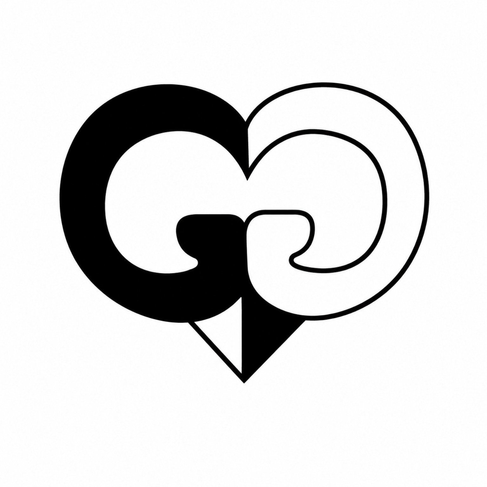

ZDROJOVÝ MATERIÁL
0 znakůObsah pro tvorbu aktivit
Citlivé údaje žáků před odesláním AI anonymizujte.
Kontrola soukromíVe vstupu zatím nebyly rozpoznány rizikové údaje.

Stačí téma, vlastní text nebo seznam pojmů. Aplikace pracuje napříč předměty.
Podpůrná, standardní a rozšiřující verze zachovají společný výukový cíl. Rozdíl je v rozsahu, nápovědách a náročnosti odpovědi.
Vyberte až pět modulů včetně skupinových, obrazových, mapových a datových formátů.
Po vložení obsahu navrhneme vhodné typy aktivit.
AI zpracuje pouze anonymizovaný obsah. Pro test vzhledu lze použít i místní návrh bez API.